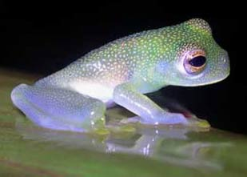

Glass Frog

The body of glass frogs colors are usually bright green or
olive green. They can have spots with colors black, white, blue or green.
The average life span for glass frogs are 10 to 14 years.
Glass frogs' livers and hearts can be seen when look underneath its body.